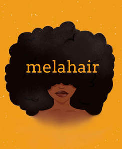

Trade Mark Journal No.2025/014 4 April 2025
UK00004164054 23 February 2025 (3,8,24,25,26,35,39,44)

- Class 3
- Beauty care cosmetics; Beauty preparations for the hair; Beauty lotions; Beauty serums; Beauty soap; Beauty creams; Beauty masks; Masks (Beauty -); Beauty gels; Hair cosmetics; Facial beauty masks; Hairdressing preparations; Beauty creams for body care; Beauty tonics for application to the face; Beauty care preparations; Beauty milk; Hairstyling serums; Beauty milks; Body cleaning and beauty care preparations; Skincare cosmetics; Beauty balm creams; Beauty tonics for application to the body; Natural cosmetics; Distilled oils for beauty care; Beauty serums with anti-ageing properties; Colour cosmetics; Beauty masks for hands; Hairstyling masks; Cosmetics; Nail cosmetics; Hair styling lotions; Hair care creams [for cosmetic use]; Hair care lotions [for cosmetic use]; Moisturisers [cosmetics]; Products for protecting coloured hair; Suncare lotions [for cosmetic use]; Suncare lotions; Mousses [cosmetics]; Room fragrancing products; Styling lotions; Skin moisturizers used as cosmetics; Baby care products (Non-medicated -); Shampoos; Hair lotions; Hair shampoos; Styling sprays for the hair; Hair styling gels; Styling gels for the hair; Mousses being hair styling aids; Hair styling waxes; Hair shampoo; Hair conditioners; Hair styling gel; Cosmetic hair lotions; Dyes for the hair; Hair dyes; Hair color; Hair styling preparations; Colouring lotions for the hair; Tints for the hair; Hair oils; Hair styling spray; Hair masks; Hair serums; Hair moisturizers; Hair conditioner; Hair mousses; Hair balms; Hair colourants; Hair pomades; Hair dye; Hair tonics [for cosmetic use]; Hair lighteners; Hair tonics; Hair care lotions; Hair colorants; Hair creams; Hair sprays; Hair lotion; Hair gels; Hair conditioners for babies; Hair protection lotions; Baby hair conditioner; Cosmetics for the use on the hair; Shampoos for human hair; Hair care masks; Mousses [toiletries] for use in styling the hair; Hair dressings for men; Hair grooming preparations; Hair care creams; Hair colouring.
- Class 8
- Hairdressing scissors; Hand tools for use in beauty care; Hair styling appliances; Hair clippers; Electric hair straighteners; Electric irons for styling hair; Electric hair crimpers.
- Class 24
- Apparel fabrics; Jersey fabrics for clothing; Textile piece goods for clothing; Textile used as lining for clothing.
- Class 25
- Hairdressing capes; Clothing; Casual clothing; Headbands [clothing]; Headbands for clothing; Silk clothing; Ready-to-wear clothing; Knitwear [clothing]; Jerseys [clothing]; Jackets [clothing]; Athletic clothing; Sports clothing; Embroidered clothing; Men's clothing; Leisure clothing; Clothing for leisure wear; Knitted clothing; Clothing for gymnastics; Dance clothing; Clothing for children; Tops [clothing]; Women's clothing; Clothes.
- Class 26
- Hair twisters [hair accessories]; Twisters [hair accessories]; Claw clips [hair accessories]; Snap clips [hair accessories]; Hair ornaments, hair rollers, hair fastening articles, and false hair; Hair barrettes; Hair scrunchies; Brooches [clothing accessories]; Ornaments (Hair -); Ornaments for the hair; Hair ornaments; Bows for the hair; Hair bows; Hair ribbons for Japanese hair styling (tegara); Hair tassel strings for Japanese hair styling (motoyui); Sticks for use in styling the hair; Hair decorations; Tresses of hair; Hair (Tresses of -); Hair tresses; Hair fasteners; Hair ornaments in the nature of hair wraps; Hair pieces; Hair extensions; Hairpieces for Japanese hair styling [kamishin]; Hair ribbons; Ribbons for the hair; Hair clips; Hair elastics; Plaits of hair; Hair curlers; Hair buckles; Arm bands [clothing accessories]; Hair pins; Pins for the hair; Ponytail holders and hair ribbons; Hair coloring caps; Hair rollers; Plaited hair; Hair (Plaited -); Fibres for use as replacement hair; Hair colouring caps; Oriental hair pins.
- Class 35
- Retail services in relation to hair products; Online retail store services relating to cosmetic and beauty products; Retail services relating to clothing; Online retail store services relating to clothing; Online retail services relating to clothing; Retail services in relation to clothing accessories; Retail services connected with the sale of clothing and clothing accessories.
- Class 39
- Packaging of products.
- Class 44
- Hairdressing; Services of a hair and beauty salon; Salons (Hairdressing -); Hairdressing salons; Salon services (Hairdressing -); Hairdressing salon services; Beauty salons for wig cutting; Hairdressing services; Beauty care; Hair salon services for women; Hair salon services; Hair dressing salon services; Hygienic and beauty care; Hair salon services for men; Hair salon services for children; Beauty treatment services especially for eyelashes; Human hygiene and beauty care; Nail salon services; Beauty care of feet; Hair styling services; Rental of machines and apparatus for use in beauty salons or barbers' shops; Hair colouring services; Haircare services; Hair styling; Hair braiding services; Cosmetic treatment for the hair; Rental of hair styling apparatus; Hair replacement; Hair dyeing services; Shampooing of the hair; Hair straightening services; Hair coloring services; Hair perming services.
Melodie McLean